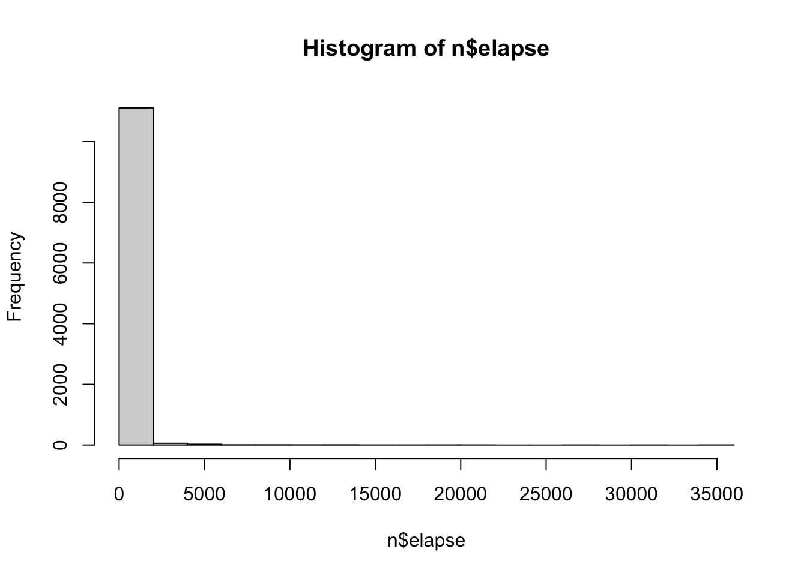
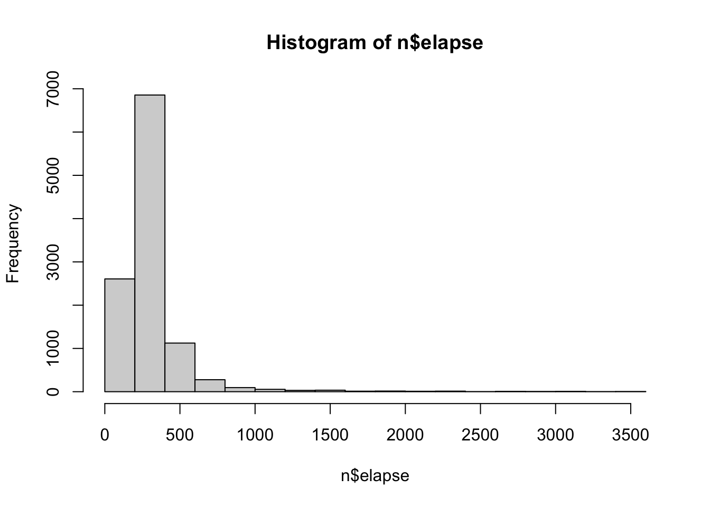
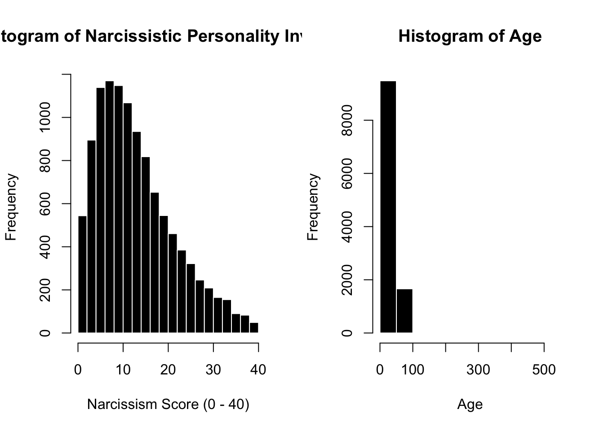
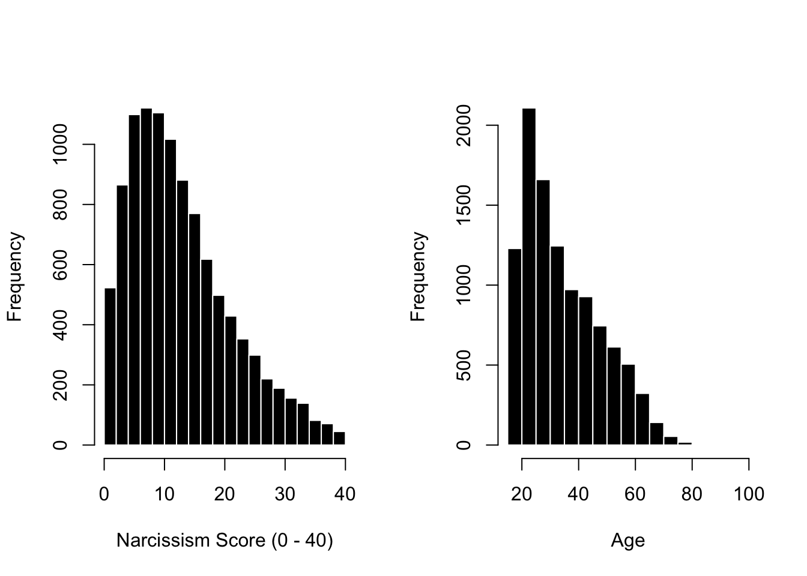
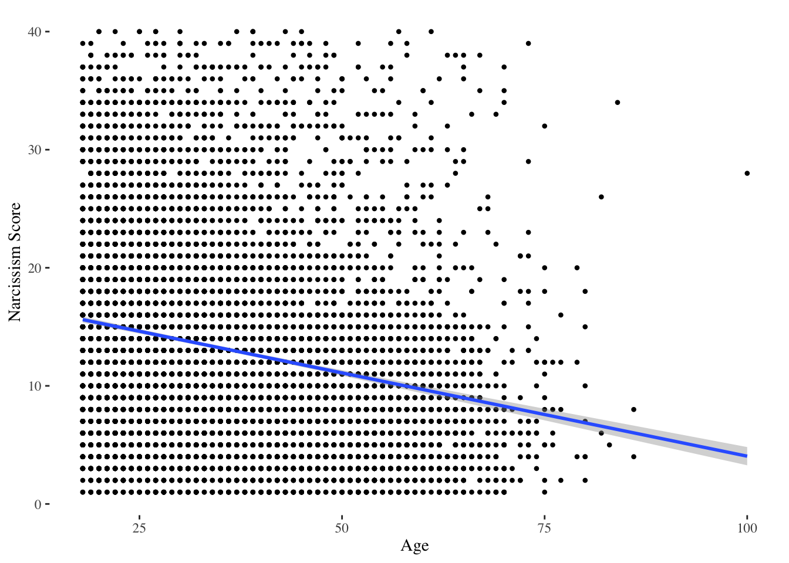
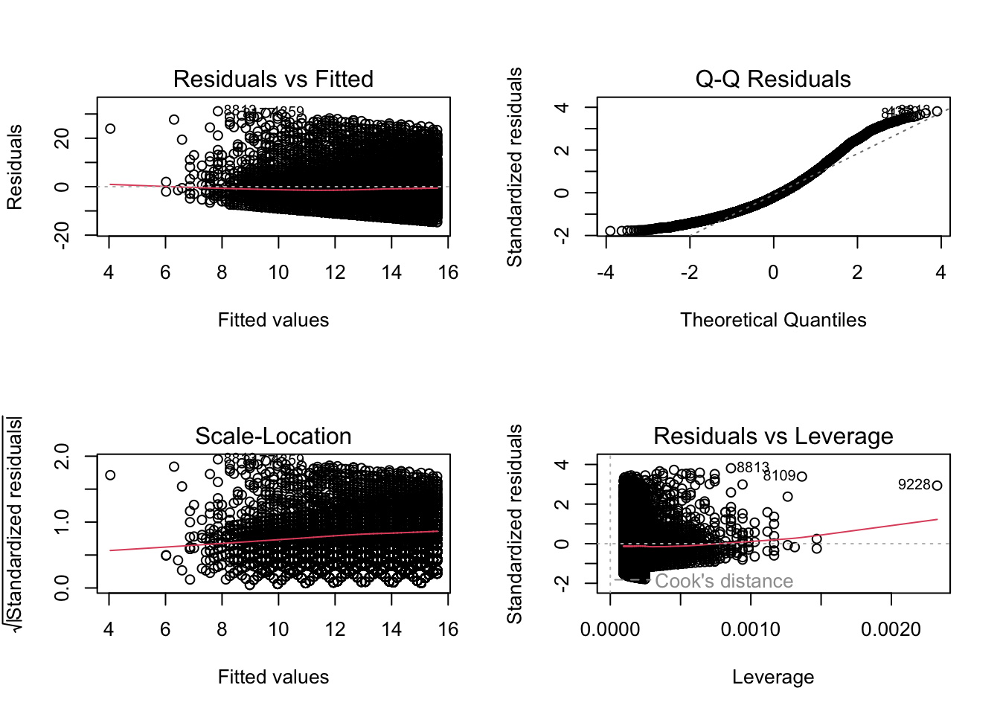
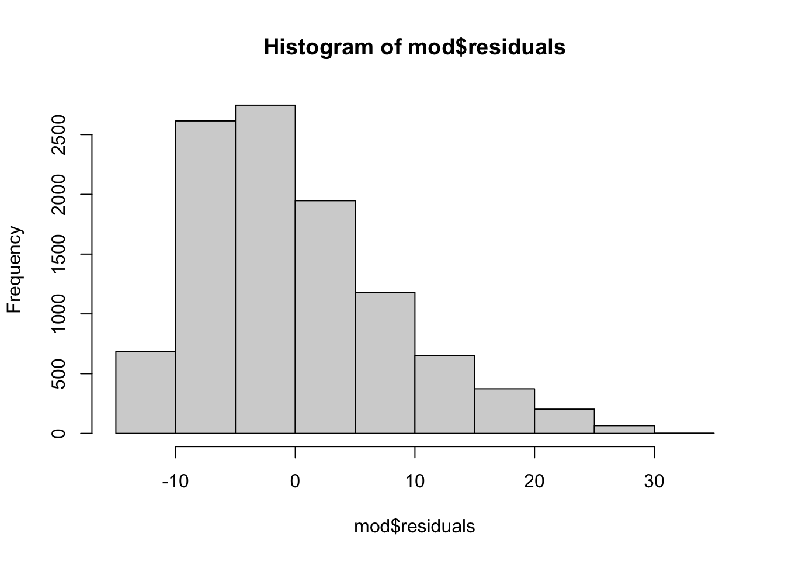
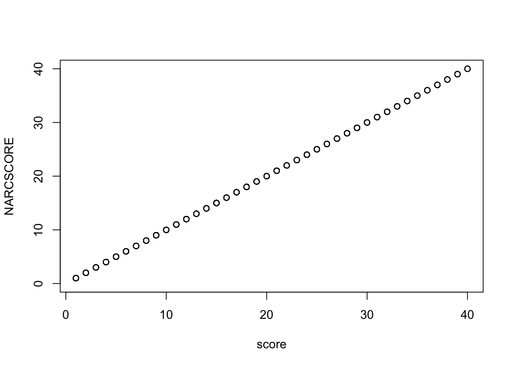
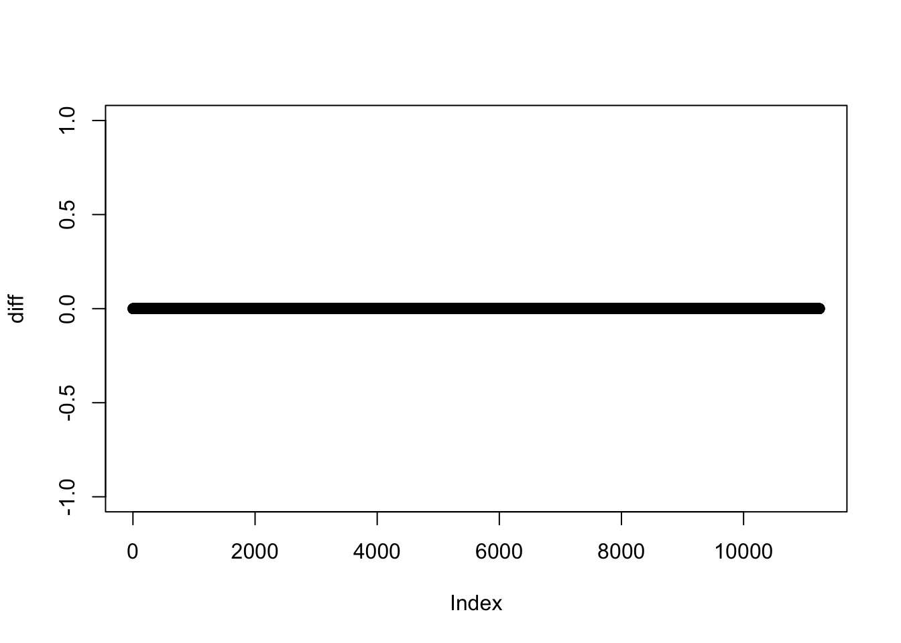

Use the dataset to answer the questions below. Make sure your report a) includes the code that you used, b) shows the result / output in a clear and organized way (e.g., do not include junk output that we don’t need to see!), and c) answers the questions to explain your code / the result. This is representative of the kind of work you’ll do on the actual exam, though the specific questions / tasks will change depending on the dataset. The key has been (or will be) posted - try on your own, but use as a guide if you get stuck. Yeah!
The Dataset and Problem.
Load the “Narcissism” dataset (on Dropbox) into R. Note that these data are not ‘comma’ separated values, but separated by tabs; you’ll need to import this using the following argument. Check to make sure the data loaded correctly, and report the sample size. Look over the codebook (also posted to Dropbox).
Dr. Professor wants to see whether there’s a relationship between narcissism (the DV; variable = score in the dataset) and age (the IV; variable = age). Use the dataset to test Dr. Professor’s prediction that as people get older, they get less narcissistic.
Problem 1. Data Loading and Cleaning
Load the data and check to make sure the data loaded correctly. Report the sample size.
Professor Note : the codebook doesn’t specify that zeros are missing data, but it’s also clear that certain answers should not have a zero, and I don’t get correct answers when treating zeros as data. I missed this at first, but realized this was an issue when I created the Narcissism scale, and got values
n <-read.csv("~/Dropbox/!GRADSTATS/Datasets/Narcissism/data.csv", stringsAsFactors = T,na.strings =0) # removing zero valueshead(n) # looks good
The variable elapse describes how long participants took to complete the survey (time started - time submitted). Decide on a rule - justify this using a mix of logic and statistics - and use this rule to remove these individuals from your dataset. (Note that you should remove the entire individual from the dataset, not just their elapse score.) Graph the variable elapse after removing the outliers, and report the number of individuals who were removed from the dataset using your rule.
Professor Note : It’s hard to get descriptive statistics of the mean and standard deviation because there are a few MEGA outliers that are skewing even the outlier data….so I might remove those first. I’ll get rid of anyone who spent 12 hours doing this.
n$elapse[n$elapse >60*60*12] <-NAhist(n$elapse)

summary(n$elapse)
Min. 1st Qu. Median Mean 3rd Qu. Max. NA's
8.0 204.0 257.0 378.5 341.0 35178.0 10
sd(n$elapse, na.rm = T)
[1] 1073.626
Professor Note : So, there’s 44 questions, and let’s say it takes - at a mininum, 1 second to read and answer each question….I’ll set my minimum possible time to 45 seconds. This removes just a few people.
n$elapse[n$elapse <45] # haven't removed them yet; just looking.
[1] NA 8 NA NA NA 33 NA 24 NA NA NA NA NA
Professor Note : For the maximum value, I’m thinking super high values will be people who wandered off from the task…hard to say whether they are “bad” data, but let’s say if this took you longer than an hour (3600 seconds) I will consider your data bad. Note that 3600 seconds is {r}3600/sd(n$elapse, na.rm = T) standard deviations above the mean, but this estimate of standard deviation includes some extreme outliers, which is another reason why it’s kind of hard / silly to use SD as “THE” rule for removing outliers (since outliers will influence the SD). Anyway, this is somewhat arbitrary; but I’m using logic (and some stats) to justify my ideas. And in any case if some reviewer / advisor / peer complains, I have my code, am being transparent, and can just make adjustments as needed (then re-run everything.)
n$elapse[n$elapse <45| n$elapse >3600] # finding the outliers in the variable.n[n$elapse <45| n$elapse >3600, ] # finding the outliers in the dataset# n[n$elapse < 45 | n$elapse > 3600, ] <- NA # I get an error message when I run this! Stupid missing values. Had to comment this out because Quarto wouldn't render an error message. SIGH.n[c(n$elapse <45| n$elapse >3600) &!is.na(n$elapse), ] # finding just the missing values.## gotta reload the data cuz I've removed some missing values already to explore, and want a total count.n <-read.csv("~/Dropbox/!GRADSTATS/Datasets/Narcissism/data.csv", stringsAsFactors = T, na.strings =0) # toolong <- n[c(n$elapse <45| n$elapse >3600) &!is.na(n$elapse), ]nrow(toolong) # 81 folks will be removed.
Professor Note : Okay, now I need to remove these outliers.
n[c(n$elapse <45| n$elapse >3600) &!is.na(n$elapse), ] <-NA# exclude missing values from my rule.hist(n$elapse) # they gone.

Problem 2. Descriptive Statistics Graphs.
Graph the variables needed to test Dr. Professor’s theory. Make the graphs look nice, as if ready for a publication. Below the graphs, report the relevant descriptive statistics and describe what these statistics / the graphs tell you about these variables. What did you learn?
par(mfrow =c(1,2))hist(n$score, col ='black', bor ='white', xlab ="Narcissism Score (0 - 40)",main ="Histogram of Narcissistic Personality Inventory")hist(n$age, col ='black', bor ='white', xlab ="Age",main ="Histogram of Age")

Professor Note : Gah, more outliers!!! They will need to be removed.
n$age[n$age <18| n$age >100] # removing anyone under the age of 18, and over the age of 100
[1] NA 16 17 17 15 16 17 15 15 15 17 16 17 17 17 17 15 17
[19] 17 17 17 17 17 17 17 17 NA 16 17 17 15 16 17 17 NA 16
[37] NA 16 NA 15 17 15 14 17 16 17 NA 17 NA 17 16 15 14 16
[55] 17 17 366 17 14 16 16 15 15 NA 17 17 NA 15 17 16 NA 17
[73] 17 17 17 17 17 16 NA 16 17 14 17 16 17 16 NA 17 NA NA
[91] 17 16 16 17 16 15 14 17 NA 17 17 16 16 16 17 17 16 17
[109] NA NA 16 15 NA 14 16 17 NA 16 16 17 17 17 NA NA 16 15
[127] 15 15 16 NA 17 14 17 15 17 16 17 17 17 15 16 17 16 17
[145] 15 17 16 14 16 17 NA 16 16 16 16 NA 17 17 14 14 15 15
[163] 16 17 14 14 14 14 16 17 16 NA 15 16 17 14 17 NA 16 16
[181] 14 NA 16 NA 17 NA 14 NA 17 17 16 NA NA 15 17 17 NA 15
[199] 17 17 NA 17 NA 17 17 NA 15 15 16 15 17 15 17 NA 17 16
[217] 16 17 17 16 NA 16 16 15 16 17 17 17 15 16 17 NA 16 17
[235] 15 16 NA 14 15 NA 15 17 NA 15 16 17 NA 17 NA NA 14 14
[253] 14 16 17 17 16 15 NA 16 16 17 16 17 16 17 17 16 16 17
[271] 17 17 16 16 17 17 17 15 NA 17 14 17 17 15 17 16 17 15
[289] 15 17 15 17 15 16 17 16 16 17 17 NA 17 16 16 15 16 17
[307] 15 16 17 17 17 16 17 17 17 17 17 16 NA 15 17 17 NA 15
[325] 16 16 17 17 17 15 17 16 17 17 17 17 17 16 15 14 15 13
[343] 16 14 14 15 17 17 NA NA 16 14 15 16 17 17 17 17 16 17
[361] 17 16 16 14 14 16 17 17 NA 14 16 16 148 16 16 15 15 13
[379] 15 12 16 16 NA 117 13 17 14 17 509 17 17 13 15 16 15 17
[397] 13 NA 17 14 16 NA NA 15 15 NA NA 16 14 15 NA 17 17 14
[415] 17 17 15 NA 14 NA 15 15 16 16 13 14 15 16 17 14 15 12
[433] 16 NA 16 14 13 15 15 15 13 15 17 14 NA 16 16 15 17 17
[451] 15 15 17 16 190 16 14 16 16 17 17 17 NA 13 13 16 14 14
[469] 16 16 15 17 17 14 16 16 NA 16 13 17 NA 17 11 16 17 14
[487] 17 13 16 17 13 16 15 17 17 17 16 NA 16 17 16 16 15 15
[505] 16 16 16 15 13 15 15 16 13 17 NA 15 14 NA 14 15 17 13
[523] 16 15 17 17 16 NA 17 14 NA 17 13 NA 17 13 16 15 NA 15
[541] 17 14 15 14 17 17 15 15 16 16 16 17 NA 16 15 13 16 14
[559] 15 13 16 14 NA 17 6 16 17 14 16 14 15 NA 17 NA NA 17
[577] 13 17 15 NA 17 16 16 17 15 17 15 NA 13 15 17 16 14 NA
[595] 17 17 NA 15 13 16 15 15 17 16 15 16 16 16 17 16 16 17
[613] 16 17 14 14 17 17 NA NA 16 15 16 17 13 17 16 14 16 15
[631] 16 17 17 14 15 16 16 16 15 15 16 NA 17 17 16 17 14 17
[649] NA 15 16 17 14 10 NA 17 17 16 15 17 15 17 NA 16 16 15
[667] 14 16 16 16 16 NA 17 16 16 NA 17 13 17 15 NA 15 16 17
[685] 14 13 2 NA 17 17 15 16 17 17
n[c(n$age <18| n$age >100) &!is.na(n$age), ] <-NA# removing the missing data when filtering.par(mfrow =c(1,2))hist(n$score, col ='black', bor ='white', xlab ="Narcissism Score (0 - 40)",main ="")hist(n$age, col ='black', bor ='white', xlab ="Age",main ="")

Professor Note : these descriptive statistics may differ from yours depending on how you removed outliers in age and time elapsed!
library(psych)describe(n$score)
vars n mean sd median trimmed mad min max range skew kurtosis se
X1 1 10480 13.22 8.39 12 12.37 8.9 1 40 39 0.85 0.2 0.08
describe(n$age)
vars n mean sd median trimmed mad min max range skew kurtosis se
X1 1 10549 34.99 13.48 32 33.62 14.83 18 100 82 0.77 -0.23 0.13
Professor Note : Average narcissism is 13.17, with an SD of 8.36 and range of 1 to 40 (good b/c that’s within the natural range of the scale.) The data are right skewed; most folks are relatively lower in narcissism. I’m not an expert on narcissism (outside of witnessing it across some family dynamics…) but know this scale is not meant to measure Narcissistic Personality Disorder, so hard to say when someone is a “Narcissist” vs. just likes themselves in a healthy way.
Professor Note : Average age is 35, with a range of 18 to 100 and an SD of 13.5. Data are right skewed; fewer old-folks taking online narcissism surveys about themselves (GENERATION ME, AM I RIGHT?!?!) But seems like there’s a fairly broad distribution of data across the lifespan, and large sample size will help estimate even the less-frequent elder ages.
Problem 3. Linear Models.
Define a linear model to test Dr. Professor’s question. What is the slope, intercept, and \(R^2\) of this model (in raw and z-scored units)? Then, use bootstrapping to estimate the 95% Confidence Interval for the slope and estimate the power researchers had to detect any observed relationship. Graph the relationship between these variables, making sure to illustrate the linear model (and lines to illustrate the 95% Confidence Interval) on your graph. Below the graph, describe what these statistics tell you about the relationship between these two variables. Finally, evaluate the assumptions of this linear model.
I’ll start with the graph, since….
library(ggplot2)
Attaching package: 'ggplot2'
The following objects are masked from 'package:psych':
%+%, alpha
Warning: Removed 773 rows containing non-finite outside the scale range
(`stat_smooth()`).
Warning: Removed 773 rows containing missing values or values outside the scale range
(`geom_point()`).

mod <-lm(score ~ age, data = n)coef(mod)
(Intercept) age
18.1496471 -0.1410376
summary(mod)$r.squared
[1] 0.05120374
Professor Note : I see that there’s moderate negative relationship between age and narcissism. As people get older, they get less narcissistic. There’s a lot of error in this prediction; age only explains about 5% of the variation in narcissism (or, in other words, my linear model that uses age to make predictions of narcissism reduces error in my predictions by 5% compared to using the mean of narcissism to make predictions.)
Let’s do some bootstrapping to see how much sampling error in this small relationship I might expect to find.
bucket <-array()for(i inc(1:1000)){ n2 <- n[sample(1:nrow(n), nrow(n), replace = T), ] # new sample; based on the old sample boot.mod <-lm(score ~ age, data = n2) # new model, based on the new sample. bucket[i] <-coef(boot.mod)[2] # my slope, saved to bucket }sd(bucket)
[1] 0.00646186
coef(mod)[2] # slope from my original sample
age
-0.1410376
coef(mod)[2] +1.96*sd(bucket) # upper limit of 95% CI for slope
age
-0.1283723
coef(mod)[2] -1.96*sd(bucket) # lower limit
age
-0.1537028
Professor Note : Okay, so while in my original sample, I found a slope of -.14, I’d expect this slope to vary between -.13 and -.16 due to random sampling. My estimated sampling error is small (.006), because I have such a large sample.
Regarding the various assumptions :
Validity. Hmm, can be hard to trust self-reports, though I think people would know the answer to these questions about themselves, and less motivated to lie with an online survey than an in-person interview. Some sampling bias no doubt; would want to know more about where these people are coming from (guessing mostly the US; think that’s a variable in the dataset? something to look at later :)).
Reliable Measures. The data appear reliable; the NPI showed high internal consistency. Would wonder about
Independence. Yeah, the data are considered independent; this was a between-person study, so one individual doesn’t tell us anything about another.
Linearity & 5. Equal Variance. The diagnostic plot look okay; there’s a lot of error, but it seems mostly evenly distributed around the fitted values. I see some lumpiness around the Q-Q residual plot on the tails; these are for the folks who are higher in narcissism than we’d predict, so I wonder if there’s maybe a quadratic effect of age (like, the younguns are super narcissistic?) Or maybe we are missing some other variable. I do see there is one individual data point that could be exerting a lot of leverage if the dataset weren’t so large; not really worried about them. And my predictions about the super old people in the model is off. Looking at the graphs, I thikn that I should really remove the person whose age was 100 - a) it’s unlikely this is a valid age, b) even if this is a valid age,they are very different from the other old folks whose max age is 80) and c) this person is not well predicted by the model (as evidenced by their location on the far left or far right of some of the model diagnostic plots). I’m not going to rerun the analyses with them removed, so this little mini-lecture on outliers can exist for students to read. Are you there student? It’s me, professor.
par(mfrow =c(2,2))plot(mod)

Normality of Errors. Hmm, the residuals aren’t perfectly normal. That’s not a huge deal, but makes me think that age is not helping us predict folks who are high in narcissism.
hist(mod$residuals)

Problem 4. Creating a Scale.
Dr. Professor is worried that the narcissism variable (score) was not calculated correctly. In this study, narcissism was measured by giving people 40-items with two options and adding up the total number of “narcissism” options that people selected. At the end of the codebook, the researchers have identified which responses were used in calculating the score; however this code will not work in R. Re-create the narcissism score from these 40-items and report the alpha reliability of this scale. Then, confirm that your calculation of narcissism is exactly the same as the one that was already calculated in the dataset (score).
Heads up. This question took professor 30 minutes to figure out…so okay if you struggle a little! Feel free to peek at my key (and there’s definitely a simpler way to do this, but I was feeling stubborn about the approach I initially took). I think this represents the kind of weird data you might be asked to interpret. But I do like to have a small challenge problem on each exam, worth only 1/21 points, just to keep things interesting. FWIW, the likert scale you do on the actual exam will be more straightforward.
Professor Note : Okay, first I arranged the narcissism items into a dataframe. This was where I realized that missing values were coded as zero and needed to be removed when importing the dataset. Tricky! I know!!
summary(NARC.df)[,1:4] # just looking at the first few variables.
Q1 Q2 Q3 Q4
Min. :1.000 Min. :1.000 Min. :1.000 Min. :1.000
1st Qu.:1.000 1st Qu.:2.000 1st Qu.:2.000 1st Qu.:1.000
Median :1.000 Median :2.000 Median :2.000 Median :1.000
Mean :1.389 Mean :1.795 Mean :1.837 Mean :1.172
3rd Qu.:2.000 3rd Qu.:2.000 3rd Qu.:2.000 3rd Qu.:1.000
Max. :2.000 Max. :2.000 Max. :2.000 Max. :2.000
NA's :696 NA's :702 NA's :701 NA's :709
Professor Note : Then, I defined two variables; ifONE means that the “Is Narcissistic” response option was 1 (e.g., 1 = I will never be satisfied until I get all that I deserve = narcissistic! Whereas 2 = I take my satisfactions as they come = HEALTHIER APPROACH!) ifTWO means that the “Is Narcissistic” response option was 2. Note that I used setdiff() to find the numbers that were different between 1 and 40, so my eyes only had to glaze over when checking (and double checking) the codebook for ifOne.
ifONE <-c(1:3,6,8,11:14,16,21,24:25,27,29:31,33:34,36:39)ifTWO <-setdiff(1:40, ifONE)ifTWO # this looks right. eyes still glazing over.
Professor Note : Okay, here’s where things got trickier and melted my brain a little and there’s probably a better way. The codebook says the final narcissism score was defined by the sum of the narcissistic responses. So the narcissitic items = 1 (ifONE) would need to be subtracted from 2, so the non-narcissitic items (which were selected as = 2) will become zero (e.g., 2-2 = 0; 2-1 = 1). If the narcissitic items = 2 (ifTWO), then I need to subtract 1 from this value, so the non narcissitic items (which were selected as = 1) will become zero (e.g., 1-1 = 0; 2-1 = 1). I’m realizing now as I type this there’s a much easier way to do this using an ifelse() statement…..anyway. I have a cold and got this to work with my confusing method and so will move on.
head(cbind(NARC.df[ifTWO]-1, NARC.df[ifTWO])) # checking my confusing logic to see the changes that I made.
Professor Note : Alright, I’m ready to estimate the reliability of this scale, create the scale, and then show that they are equivalent. I can show equivalence a few ways; the scatterplot shows a perfect positive relationship.
library(psych)psych::alpha(reNARC.df)[1] # psych comes before alpha() so R doesn't get confused and try to use the ggplot2 alpha() function, which is about colors. I'm adding the index [1] here to prevent R from showing me EVERYTHING about the alpha function, which is making this report longer than it needs to be.
$total
raw_alpha std.alpha G6(smc) average_r S/N ase mean
0.9069391 0.9082589 0.9179566 0.1984006 9.900236 0.001248322 0.3290839
sd median_r
0.2115142 0.1933424
n$NARCSCORE <-rowSums(reNARC.df, na.rm = T) # my created scale.plot(NARCSCORE ~ score, data = n) # one way to show equivalence.

I could also create a difference score, and show these differences are equal to zero.
diff <- n$NARCSCORE - n$scoreplot(diff) # all zeros.

I could also use a conditional statement to evaluate whether the two variables are the same.
test <- n$score == n$NARCSCOREsummary(test) # neat.
Mode TRUE NA's
logical 10480 763
Probably other ways to do this; point is it is good to confirm that something given to you works like you think it does!